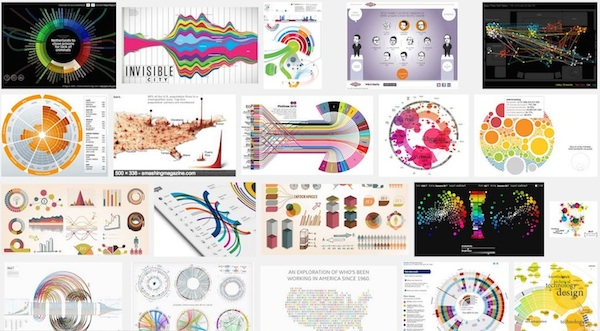
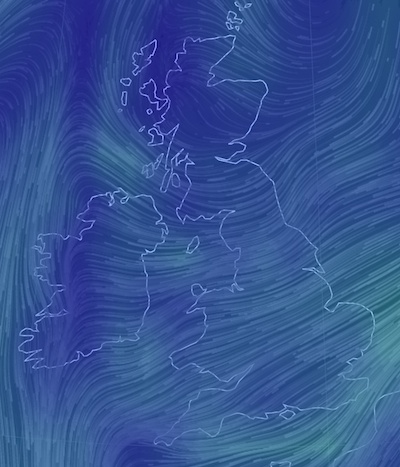

We're a diverse group of designers, developers, artists, scientists, analysts etc. all with a shared interest in data visualisation.
We meet every 4th Tuesday of the month at The Skiff, Brighton.
For more information visit our Meetup page.
Future events
26 August 2014 - Bring Your Own
Tonight will be a more informal meetup and a good chance for us to get to know one another.
July's Meetup was a great success so we'll start by looking at one or two visualisations and critiquing them. Please send me a URL or two if you've an interesting visualisation that you'd like to share.
Following that we'll collate a list of topics to discuss and we'll do our best to cover each of them. Ideas include:
- what are data visualisation best practice and how can I learn about it?
- what are the best tools for data visualisation?
- I'm working on a visualisation but feel stuck
- is there anyone who can help me with my data?
- could we organise a workshop/hack-night/etc.?
- your question/idea here!
Hope to see lots of you there!
Previous events
22 July 2014 - Data Visualisation: The Good, the Bad and the Ugly
The recent development in data visualisation tools has led to a blossoming of creativity resulting in more and more innovation and experimentation. It's safe to say that we're no longer bound to stock charts such as bar charts, pie charts, line graphs etc. when presenting our data. Is this a good thing?
Some say keep it simple whilst others like to push the boundaries.
This evening we'll take a look at a bunch of data visualisations and discuss what works & what doesn't.
(You're also invited to bring a link to a data visualisation that you find interesting. If you're prepared to present it for 5-10 minutes, that'd be great, otherwise just email me the details.)
We expect that the evening will be inspiring, informative and enlightening.
Sources for data visualisations:
Visualisations looked at during the evening included:
24 June 2014 - Data Visualisation: Tools and Processes
There's a huge number of tools for creating data visualisations, ranging from Excel & Tableau, to programming environments such as Processing, R, Python and JavaScript, through to interactive environments such as NodeBox and it's not always easy to select the right one for the job.
Therefore we'll give an overview of these toolsets with members of the community talking about their tools of choice. We will also start looking at the processes for transforming data into a visualisation.

Tools looked at during the evening included:
- Tableau
- R & ggplot2 (thanks to Peter Fine)
- iPython + Notebook (thanks to Kyran Dale)
- NodeXL (thanks to Beth Granter)
- NodeBox 1
- NodeBox 3
- D3
For more discussion see the event page.
27 May 2014 - Introductions and Informal Gathering
Our very first Meetup and a chance to introduce ourselves.
We had a good turnout (~20 people) and a good buzz right from the start. Amongst the attendees were:
- designers
- coders
- artists
- educators
- researchers
- data scientists
- data analysts